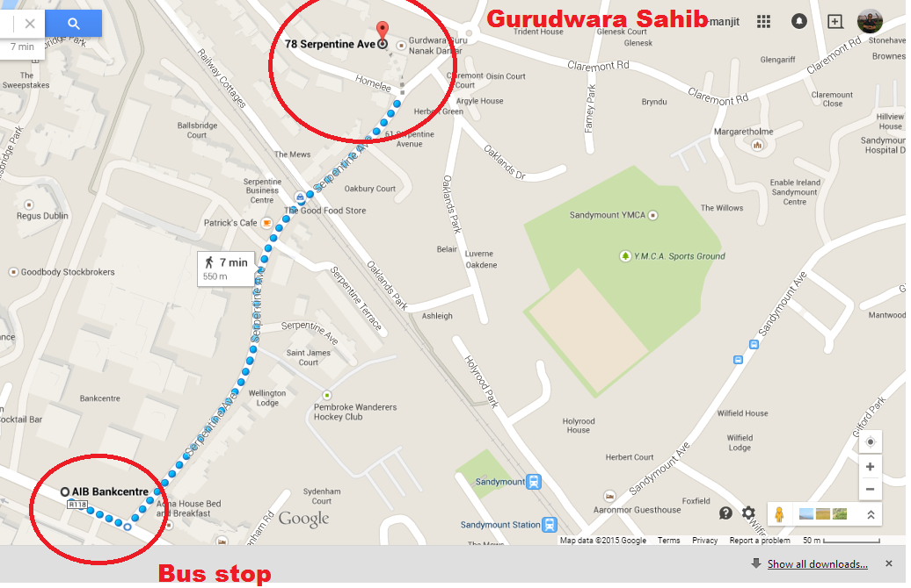

You can donate many ways for example by cash,bankdraft in favor of gurunanakdarbar, postal order, food or other item. If you are donating any food or other item, you may drop at gurudwara sahib or call at gurunanakdarbar for other way out
Journey is divided into two parts
1. From City to AIB Bankcentre(Ballsbridge) by Bus 3.9 km approximately 15-20 minutes. This AIB Bankcentre is just opposite to RDS
2. From AIB Bankcentre bus stop to GuruNanakDarbar by walk 550 meter 7 minutes walk
Walking direction from AIB Bankcentre Bus Stop to Gurudwara sahib

Once you get down from the bus follow the direction as shown in the map, while walking at one moment you will approach to a railway crossing. gurudwara sahib is then nearly 100 yards away just before the nest mini roundabout